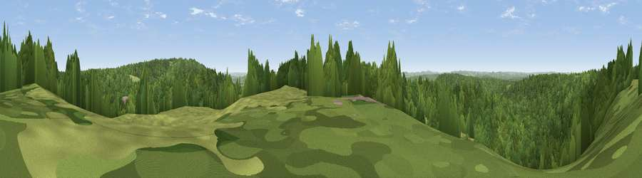

Viewpoint near Fernhurst
#23094 in England · top 31% of its area beats it · near FernhurstWhere it is
The exact computed spot (SU 89025 30225). Click the marker for map links.
The view, rendered

A 360° render of this exact spot computed from the terrain model, tree cover and land cover — summer colours, afternoon light, calibrated against photographs of famous viewpoints. Real trees, hedges and buildings will differ in detail.
The panorama
Grey silhouette: terrain skyline in each direction (720 bearings, Earth curvature and refraction included). Dashed green: skyline with trees (+15 m) and buildings (+8 m) as obstacles. Blue strip: how far the ground is visible on each bearing.
Where the view opens
Wedge length = distance to the farthest visible ground on that bearing (vegetation-aware). Rings at 10, 25 and 50 km.
What fills the view
78% woodland · 19% grassland · 1% cropland ·
Angular shares of the visible panorama (visual magnitude), not map area. Landscape diversity 0.26 (0–1 Shannon).
Key numbers
More beautiful places nearby
The staircase of upgrades: each row has a higher view potential than everything closer. Driving times are estimates from straight-line distance, calibrated against real road routing — check an actual route before setting out.
| Place | Direction | Drive | Score |
|---|---|---|---|
| Viewpoint near Haslemere | E · 3 km | ~7 min | 62.6 |
| Viewpoint near Fernhurst | ESE · 3 km | ~8 min | 75.1 |
| Viewpoint near Cocking | S · 13 km | ~25 min | 78.3 |
| Linch Down | SSW · 14 km | ~25 min | 85.2 |
| Beacon Hill | SW · 14 km | ~26 min | 85.8 |
| Chanctonbury Ring | SE · 31 km | ~48 min | 87.0 |
| Viewpoint near St. Lawrence | SW · 63 km | ~86 min | 88.2 |
| Firle Beacon | ESE · 64 km | ~87 min | 88.9 |
51.06447, -0.73092 · source: screening · position refined by local search. Computed location — check access rights before visiting.